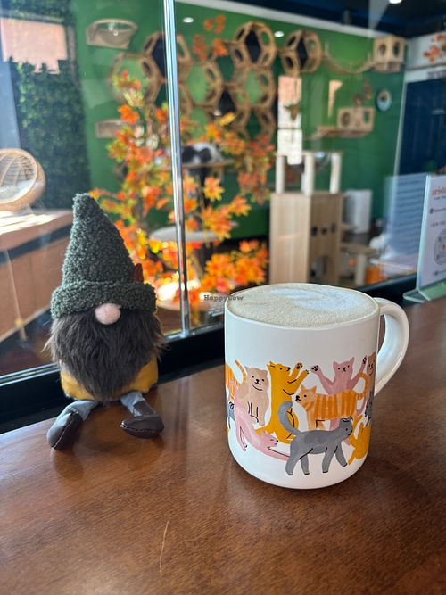
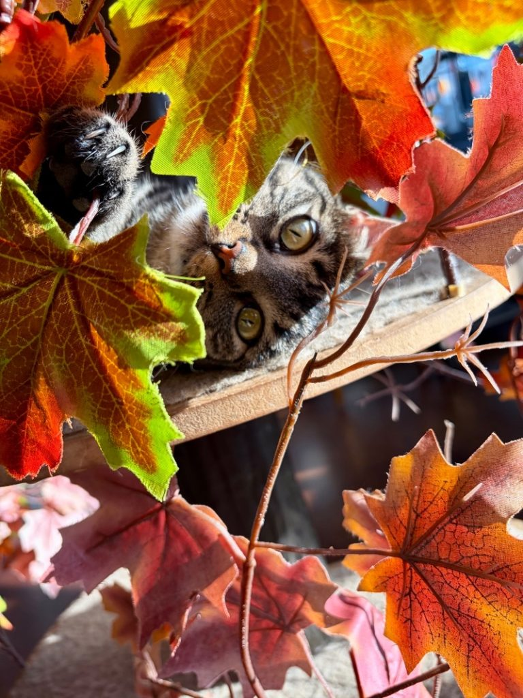
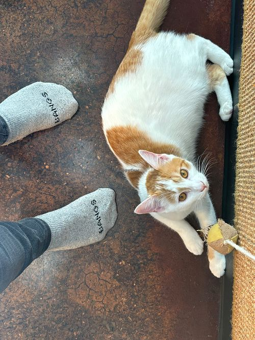

Artistocat Cafe



Coffee • Tea • Vegan
- A cat cafe tea house downtown that serves tea, espresso and snacks that can be enjoyed with takeout, dining inside while watching the adoptable kitties play in their seperate own room.
- Offers wide selection of plant-based milk alternatives for your drink and vegan baked goods